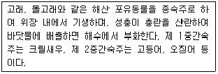

식품기사 (2013-06-02 기출문제)
1과목: 식품위생학
1. 식품에 첨가했을 때 착색효과와 영양강화 현상을 동시에 나타낼 수 있는 것은?
- 엽산(folic acid)
- 아스코르빈산(ascorbic acid)
- 캐러멜(caramel)
- 베타-카로틴(beta-carotene)
(정답률: 75%)

2. 식품의 부패검사법 중 화학적 검사법이 아닌 것?
- 휘발성 아민 측정
- 산도 측정
- 단백질 침전 반응
- 경도 측정
(정답률: 87%)
3. 다음의 식품첨가물 중 유화제로 사용되지 않는 것은?
- Polysorbate 20
- Glycerin Fatty Acid Ester
- Sorbitan Fatty Acid Ester
- Morpholine Fatty Acid Salt
(정답률: 61%)
4. 식품위생감시원의 직무가 아닌 것은?
- 식품 등의 위생적인 취급에 관한 기준의 이행지도
- 식품 등의 수입신고
- 표시기준 또는 과대광고 금지의 위반 여부에 관한 단속
- 시설기준의 적합 여부의 확인 검사
(정답률: 80%)
5. 비교적 소량의 검체를 장기간 계속 투여하여 그 영향을 검사하는 시험으로, 식품첨가물의 독성을 평가하는데 사용되는 것은?
- 급성독성시험
- 아급성독성시험
- 만성독성시험
- 최기형성시험
(정답률: 90%)
6. 분변 오염의 지표로 이용되는 대장균군의 MPN(Most Probable Number)검사에 관한 설명으로 옳은 것은?
- 검체 10ml 중 있을 수 있는 대장균군수
- 검체 100ml 중 있을 수 있는 대장균군수
- 검체 100g 중 있을 수 있는 대장균군수
- 검체 10g 중 있을 수 있는 대장균군수
(정답률: 86%)
7. 독버섯 중에서 주로 검출되는 유독성분은?
- 솔라닌(Solanine)
- 무스카린(Muscarine)
- 테물린(Temuline)
- 아트로핀(Atropine)
(정답률: 87%)
8. 석탄산계수에 대한 설명으로 옳은 것은?
- 소독제의 무게를 석탄산 분자량으로 나눈 값이다.
- 소독제의 독성을 석탄산의 독성 1000으로 하여 비교한 값이다.
- 각종 미생물을 사멸시키는 데 요하는 석탄산의 농도 값이다.
- 석탄산과 동일한 살균력을 보이는 소독제의 희석도를 석탄산의 희석도로 나눈 값이다.
(정답률: 87%)
9. 식중독의 원인 세균 중 사람이나 동물의 피부, 점막 및 장관 등에 정착하고 있으며, 도시락, 샌드위치, 샐러드 등의 식품에서 식중독을 일으키는 경우가 많은 것은?
- 세레우스균
- 황색 포도상구균
- 보툴리누스균
- 장염 비브리오균
(정답률: 79%)
10. 식품위해요소중점관리기준에서 중요관리점(CCP) 결정 원칙에 대한 설명으로 틀린 것은?
- 농·임·수산물의 판매 등을 위한 포장, 단순처리단계 등은 선행요건이 아니다.
- 기타 식품판매업소 판매식품은 냉장·냉동식품의 온도 관리 단계를 CCP로 결정하여 중점적으로 관리함을 원칙으로 한다.
- 판매식품의 확인된 위해요소 발생을 예방하거나 제거 또는 허용수준으로 감소시키기 위하여 의도적으로 행하는 단계가 아닐 경우는 CCP가 아니다.
- 확인된 위해요소 발생을 예방하거나 제거 또는 허용수준으로 감소시킬 수 있는 방법이 이후 단계에도 존재할 경우는 CCP가 아니다.
(정답률: 56%)
11. 방사성 물질로 오염된 식품이 인체 내에 들어갈 경우 그의 위험성을 판단하는 데 직접적인 영향이 없는 인자는?
- 방사선의 종류와 에너지의 크기
- 식품 중의 수분활성도
- 방사능의 물리학적 및 생물학적 반감기
- 혈액 내에 흡수되는 속도
(정답률: 90%)
12. 식품업계가 HACCP을 도입함으로써 얻을 수 있는 효과와 거리가 먼 것은?
- 위해요소를 과학적으로 규명하고 이를 효과적으로 제어하여 위생적이고 안전한 식품제조가 가능해짐
- 장기적으로 관리인원 감축 등이 가능해짐
- 모든 생산단계를 광범위하게 사후관리하여 위생적인 제품을 생산할 수 있음
- 업체의 자율적인 위생관리를 수행할 수 있음
(정답률: 55%)
13. 채소로 감염될 수 있는 기생충은?
- 광절열두조충, 아나사키스충
- 회충, 편충
- 간흡충, 폐흡충
- 무구조충, 유구조충
(정답률: 88%)
14. 파상열에 대한 설명으로 틀린 것은?
- 건조 시 저항력이 강하다.
- 특이한 발열이 주기적으로 반복된다.
- Brucella 속이 원인균이다.
- 원인균은 열에 대한 저항성이 강하다.
(정답률: 78%)
15. 구운 육류의 가열 분해에 의해 생성되기도 하고, 마이야르(maillard)반응에 의해서도 생성되는 유독성분은?
- 휘발성아민류(Volatile Amines)
- 이환방향족아민류(Heterocylic Amines)
- 아질산염(N-nitrosoamine)
- 메틸알코올(Methyl Alcohol)
(정답률: 80%)
16. 세균성 식중독 중 독소형의 원인이 되는 것은?
- 장염 비브리오균
- 황색 포도상구균
- 살모넬라균
- 대장균
(정답률: 75%)
17. 다음 중 저온 저장한 수산물의 선도 저하와 가장 관계가 깊은 미생물은?
- Escherichia 속
- Bacillus 속
- Pseudomonas 속
- Proteus 속
(정답률: 70%)
18. 부적당한 캔을 사용할 때 다음 통조림 식품 중 주석의 용출로 내용식품을 오염시킬 우려가 가장 큰 것은?
- 어육
- 식육
- 산성과즙
- 연유
(정답률: 86%)
19. 아래의 설명에 해당하는 기생충은?

- 유구조충
- 아니사키스
- 유극악구충
- 요꼬가와흡충
(정답률: 86%)
20. 도자기, 법랑기구 등에서 식품으로 이행이 예상되는 물질은?
- 납
- 주석
- 가소제
- 안정제
(정답률: 83%)
2과목: 식품화학
21. 1M NaCl, 0.5M KCl, 0.25M HCl 이 준비되어 있다. 최종농도 0.1M NaCl, 0.1M KCl, 0.1M HCl 혼합수용액 1000mL를 제조하고자 할 때 각각 첨가 되어야 할 시약의 부피는 얼마인가?
- 1M NaCl 용액 50mL, 0.5M KCl 100mL, 0.25M HCl 200mL를 첨가 후 물 650mL를 첨가한다.
- 1M NaCl 용액 75mL, 0.5M KCl 150mL, 0.25M HCl 300mL를 첨가 후 물 475mL를 첨가한다.
- 1M NaCl 용액 100mL, 0.5M KCl 200mL, 0.25M HCl 400mL를 첨가 후 물 300mL를 첨가한다.
- 1M NaCl 용액 125mL, 0.5M KCl 250mL, 0.25M HCl 500mL를 첨가 후 물 120mL를 첨가한다.
(정답률: 74%)
22. 뉴톤 유체에 대한 설명 중 옳은 것은?
- 전단속도에 따라 전단응력이 비례적으로 감소한다.
- 물, 청량음료, 식용유 등 묽은 용액은 뉴톤 유체의 흐름을 나타낸다.
- 뉴톤 유체의 정도는 온도에 따라 일정하다.
- 유동곡선의 종축 절편에 따라 여러 종류로 분류된다.
(정답률: 82%)
23. 양파를 가열 조리할 경우 자극적인 방향과 맛이 사라지고 단맛을 나타내는 원인은?
- Propyl Allyl Disulfide가 가열로 분해되어 Propyl Mercaptan으로 변했기 때문이다.
- Quercetin이 가열에 의해 Mercaptan으로 변했기 때문이다.
- 섬유질이 Amylase 효소의 분해를 받아 포도당을 생성했기 때문이다.
- Carotene이 가열에 의해 단맛을 내는 Lycopene 으로 변화되었기 때문이다.
(정답률: 82%)
24. 고기 근육 단백질의 주성분은?
- 미오신(Myosin)
- 헤모글로빈(Hemoglobin)
- 콜라겐(Collagen)
- 마이오글로빈(Myoglobin)
(정답률: 70%)
25. 관능검사 중 흔히 사용되는 척도의 종류가 아닌 것은?
- 명목 척도
- 서수 척도
- 비율 척도
- 지수 척도
(정답률: 67%)
26. 케이크의 반죽을 구울 때 온도가 올라가면서 일어나는 현상이 아닌 것은?
- 밀가루 전분의 호화가 일어난다.
- 글루텐의 변성이 일어난다.
- 수분의 증발이 일어난다
- 유동성이 증가되면서 공기의 팽창이 일어난다.
(정답률: 64%)
27. 콩에 함유된 특성성분이 아닌 것은?
- 이소플라본(Isoflavone)
- 레시틴(Lecitin)
- 라피노오스(Raffinose)
- 쿠어세틴(Quercetin)
(정답률: 79%)
28. 유지의 경화(hardening)란?
- 유지로부터 수소를 분리하여 불포화지방산을 만드는 것이다.
- 고체 유지를 액체 유지로 만드는 것이다.
- 고체 유지를 반액체 유지로 만드는 것이다.
- 액체 유지를 고체 유지로 만드는 것이다.
(정답률: 77%)
29. 전분의 노화에 영향을 주는 인자에 대한 설명으로 틀린 것은?
- 전분에 수분함량이 10% 이하가 되면 노화가 잘일어나지 않는다.
- -30 ∼ -20℃ 에 이르면 노화가 거의 일어나지 않는다.
- 노화는 pH가 알칼리성 부근에서 가장 잘 일어난다.
- Amylase의 함량이 많으면 노화가 잘 된다.
(정답률: 55%)
30. 쓴맛 성분과 그 쓴맛을 감소시킬 수 있는 효소의 연결이 옳은 것은?
- 리모닌(Limonin)- 파파인(Papain)
- 탄닌(Tannin)- 레닌(Renin)
- 나린진(Naringin)- 나린진나아제(Naringinase)
- 카페인(Caffein)- 셀룰라아제(Cellulase)
(정답률: 80%)
31. 다음 콜로이드 식품들의 분산상과 연속상이 서로 옳게 연결된 것은?
- 샐러드 드레싱: 분산상- 액체, 연속상- 액체
- 마요네즈: 분산상- 기체, 연속상- 액체
- 버터: 분산상- 고체, 연속상- 액체
- 휘핑크림: 분산상- 액체, 연속상- 기체
(정답률: 64%)
32. Amylose와 Amylopectin의 설명 중 틀린 것은?
- Amylose의 요오드반응은 청색이나 Amylopectin은 적자색이다.
- Amylose는 요오드 분자와 내포화합물을 형성하나 Amylopectin은 요오드 분자와 내포화합물을 형성하지 않는다.
- 찹쌀은 Amylopectin 함량이 100%이다.
- Amylose는 수용액에서 안정하나 Amylopectin은 노화되기 쉽다.
(정답률: 70%)
33. 식품 중 결합수(Bound Water)에 대한 설명으로 틀린 것은?
- 미생물의 번식에 이용할 수 없다.
- 100℃ 이상에서도 제거되지 않는다.
- 0℃ 에서도 얼지 않는다.
- 식품의 유용성분을 녹이는 용매의 구실을 한다.
(정답률: 54%)
34. 과일주스 제조 공정 중 "살균온도, 살균시간, 살균pH" 변화에 의한 제품의 맛을 관능 검사하였다. 그 결과 위의 3가지 요인들을 이용하여 제품 맛에 대한 함수식을 만들었다. 이와 같이 여러 개의 독립변수들로 하나의 종속변수를 설명하는 함수식을 만들 때 사용되는 통계 분석법은?
- 주성분분석
- 분산분석
- 요인분석
- 회귀분석
(정답률: 79%)
35. Maillard 반응이나 가열에 의해 주로 생성되는 휘발성분이 아닌 것은?
- 케톤류(Ketone)
- 피롤류(Pyrroles)
- 레덕톤류(Reductones)
- 피라진류(Pyrazines)
(정답률: 54%)
36. 흑미, 딸기 등에 공통적으로 들어있는 색소는?
- Chlorophyll
- Carotenoid
- Anthoxanthin
- Anthocyanin
(정답률: 70%)
37. 교질용액(Colloidal Solution)의 특징으로 옳은 것은?
- 오래 방치하면 입자가 중력에 의해 가라 앉는다.
- 빛을 산란시킨다.
- 입자의 직경이 1~10μm 이다.
- 일반 현미경으로 입자를 관찰할 수 있다.
(정답률: 73%)
38. 식품의 표면적 특성을 올바르게 설명한 것은?
- 분말 재료의 경우 표면적이 적으면 용해도가 증가한다.
- 표면적이 커지면 커질수록 다른 물질과의 반응성이 떨어진다.
- 입자의 크기를 작게 하면 반응성이 높아진다.
- 우유를 균질화 시키는 목적은 지방 입자를 크게 만들어 맛을 향상시키기 위함이다.
(정답률: 69%)
39. 단순 다당류가 아닌 것은?
- 글리코겐(Glycogen)
- 셀룰로오스(Cellulose)
- 전분(Starch)
- 펙틴(Pectin)
(정답률: 63%)
40. 겨자과 식물의 주된 향기 성분은?
- Allyl Isothiocyanate
- Sedanolide
- Allicin
- Lenthionine
(정답률: 74%)
3과목: 식품가공학
41. 다음의 살균기술 중 비열살균에 해당하지 않는 것은?
- 마이크로웨이브 살균
- 초고압 살균
- 고전장 펄스 살균
- 방사선 살균
(정답률: 59%)
42. 소시지(sausage) 가공에 쓰이는 기계 장치는?
- Silent Cutter
- Hammer Mill
- Freezer
- Ball Mill
(정답률: 86%)
43. 안지름 2.5cm의 파이프안으로 21℃의 우유가 0.10m3/min의 유량으로 흐를 때 이 흐름의 상태를 어떻게 판정하는가? (단, 우유의 점도 및 밀도는 각각 2.1 x 10-2 Pa·s 및 1029kg/m3 이다.)
- 층류
- 중간류
- 난류
- 경계류
(정답률: 58%)
44. 고기의 해동강직에 대한 설명으로 틀린 것은?
- 골격으로부터 분리되어 자유수축이 가능한 근육은 60~80%까지의 수축을 보인다.
- 가축처럼 질기고 다즙성이 떨어지는 저품질의 고기를 얻게 된다.
- 해동강직을 방지하기 위해서는 사후강직이 완료된 후에 냉동해야 한다.
- 냉동 및 해동에 의하여 고기의 단백질과 칼슘결합력이 높아져서 근육수축을 촉진하기 때문에 발생한다.
(정답률: 70%)
45. 농축 장치를 사용하여 사과주스를 농축하고자 한다. 원료인 사과주스는 7%의 고형분을 함유하고 있으며, 농축이 끝난 제품은 60%의 고형분을 함유하도록 한다. 원료주스를 1000kg/h의 속도로 투입할 때 증발 제거되는 수분의 양을 계산하면 얼마인가?(단, 증발되는 수분에는 고형분이 전혀 포함되지 않는 것으로 가정한다.)
- 783.3kg/h
- 883.3kg/h
- 983.3kg/h
- 1083.3kg/h
(정답률: 51%)
46. 양조법에 의한 된장 숙성 중 생성되지 않는 물질은?
- 말토오스, 글루코오스
- IMP, GMP
- 알코올, 유기산
- 아미노산, 에스테르
(정답률: 56%)
47. 통조림의 뚜껑에 있는 익스팬션 링(Expansion ring)의 주 역할은?
- 상하의 구별을 쉽게 하기 위함이다.
- 충격에 견딜 수 있게 하기 위함이다.
- 밀봉시 관통과의 결합을 쉽게 하기 위함이다.
- 내압의 완충 작용을 하기 위함이다.
(정답률: 78%)
48. 아미노산 간장 제조에 사용되지 않는 것은?
- 코오지
- 탈지대두
- 염산용액
- 수산화나트륨
(정답률: 72%)
49. 일반어류의 분류 기준이 아닌 것은?
- 독성 여부
- 서식 장소
- 어류의 모양
- 어류의 지방 함량
(정답률: 56%)
50. 수확한 과일 및 채소에 대한 설명으로 틀린 것은?
- 산소를 섭취하여 효소적으로 산화되므로 이산화탄소를 내보내는 호흡작용을 하여 성분이 변화한다.
- 증산작용이 일어나 신선도와 무게가 변한다.
- 호흡작용은 수확 직후에 가장 저조하고 시간이 경과함에 따라 점차 강해진다.
- 고온성 과일 및 채소를 제외하고, 미생물이 번식하기 어려운 1~6 ℃ 정도가 저장을 위한 적당한 온도이다.
(정답률: 81%)
51. 저온 장해가 일어나기 쉬운 것은?
- 바나나
- 쇠고기
- 고등어
- 대두
(정답률: 76%)
52. 경화유 제조에 사용되는 수소 첨가용 촉매는?
- Pd
- Au
- Fe
- Ni
(정답률: 85%)
53. 아이스크림 제조 시 향과 색소 및 산류의 바람직한 첨가 시기는?
- 배합공정에서 첨가
- 여과 후 균질화 하기 전
- 멸균이 끝난 후 숙성시키기 전
- 숙성이 끝난 후 동결시키기 전
(정답률: 63%)
54. 물을 탄 우유의 판별법으로 부적당한 것은?
- 비점 측정
- 빙결점 측정
- 지방 측정
- 점도 측정
(정답률: 73%)
55. 알루미늄박(AL-foil)에 폴리에틸렌 필름을 입혀서 사용하는 가장 큰 목적은?
- 산소나 가스의 차단
- 내유성 향상
- 빛의 차단
- 열접착성 향상
(정답률: 72%)
56. 다음 중 EPA(eicosapentaenoic acid)와 DHA(docosahexeno-ic acid)가 가장 많이 함유되어 있는 식품은?
- 닭가슴살
- 삼겹살
- 정어리
- 쇠고기
(정답률: 87%)
57. 분유 및 계란분을 제조하는데 가장 알맞은 건조기는?
- 분무 건조기(Spray Drier)
- 킬른 건조기(Kiln Drier)
- 터널 건조기(Tunnel Drier)
- 냉동 건조기(Freeze Drier)
(정답률: 86%)
58. Glucono-δ-laction이 연제품의 pH를 낮추는데 이용되는 주요 원리는?
- 알칼리 금속과 반응하여 착염을 만든다.
- 다른 배합품과 반응하여 산성화시킨다.
- 산으로 작용한다.
- 물에 용해하면 가수분해되어 산성이 된다.
(정답률: 64%)
59. 식품 중 단분자층물(Monomolecular Layer Of Water)에 대한 설명으로 가장 적합한 것은?
- 세균의 증식에 이용된다.
- 지질의 산화를 방지한다.
- 식품 중의 효소작용에 이용된다.
- 농축 증발 시 쉽게 제거된다.
(정답률: 57%)
60. 다음의 막분리공정 중 치즈훼이(whey)로부터 유당(lactose)을 회수하는 데 적합한 공정은?
- 정밀여과
- 한외여과
- 전기투석
- 역삼투
(정답률: 44%)
4과목: 식품미생물학
61. 식품공업에서 Amylase를 생산하는 대표적인 균주와 거리가 먼 것은?
- Aspergillus oryzae
- Bacillus subtilis
- Rhizopus delemar
- Candida lipolytica
(정답률: 59%)
62. Melanine 과잉생산은 피부노화 및 피부암을 유발시키고 채소, 과일, 생선의 질을 저하시킨다. Melanine 억제를 위한 방법으로 가능성이 있는 것은?
- Aspergillus flavus 가 생산하는 aflatoxin을 이용한다.
- Cellulomonas fimi 가 생산하는 cellulase를 이용한다.
- Mucor rouxii 가 생산하는 lactose를 이용한다.
- Streptomyces bikiniensis 가 생산하는 Kojic acid 등을 이용한다.
(정답률: 50%)
63. 고기류를 이용하여 발효시켜 제조한 식품(발효육제품)은?
- 살라미
- 템페
- 요구르트
- 사우어크라우트
(정답률: 86%)
64. 공여세포로부터 유리된 DNA가 바이러스를 매개로 수용세포내로 들어가 일어나는 DNA 재조합 방법은?
- 형질전환(Transformation)
- 형질도입(Transduction)
- 접합(Conjugation)
- 세포융합(Cell Fusion)
(정답률: 73%)
65. 미생물 균체 내 무기물과 유기물에 대한 설명으로 옳은 것은?
- 무기원소는 삼투압 및 세포의 투과성에 관계한다.
- 마그네슘은 EMP경로의 효소부활제로 작용한다.
- 무기원소와 유기상태로 결합한 유기화합물은 서로 삼투압에 관계한다.
- 인은 AMP, ADP, ATP 등의 조효소 성분으로 작용한다.
(정답률: 45%)
66. 다음 중 파지에 대한 설명 중 틀린 것은?
- 일반적으로 세균보다 크다.
- 세균을 숙주로 하여 증식하는 것을 박테리오파지라고 한다.
- 숙주세포를 녹이고 밖으로 나오는 용균성이 있다.
- 숙주세포를 용균하지 않고 살아가는 용원성이 있다.
(정답률: 74%)
67. DNA와 RNA 합성에 대한 설명 중 틀린 것은?
- 5'-end에서 3'-end 방향으로 합성된다.
- 합성을 시작하기 위해서 반드시 primer가 필요하다.
- DNA와 RNA 합성 모두 DNA를 주형(template)으로 이용한다.
- 새로 합성되는 DNA나 RNA 가닥의 방향은 주형과 역방향이다.
(정답률: 54%)
68. 효모에 관한 다음 설명 중 틀린 것은?
- 진핵세포구조를 가진 고등 미생물로 출아법 또는 분열법으로 증식한다.
- 알코올 발효능이 강한 종류가 많아 양조, 제빵 등에 사용된다.
- 당질 원료 이외에는 탄소원으로 사용할 수 없으며. 단세포 단백질을 생산하므로 균체 자체의 중요도가 높아지고 있다.
- 양조나 식품에 유해한 효모나 인체에 병원성을 갖는 효모도 있다.
(정답률: 69%)
69. 다음 중 자낭균류가 아닌 곰팡이는?
- Aspergillus
- Penicillium
- Monascus
- Rhizopus
(정답률: 56%)
70. 분열에 의해서 증식하는 효모는?
- Saccharomyces 속
- Candida 속
- Torulaspora 속
- Schizosaccharomyces 속
(정답률: 63%)
71. 세포융합(cell fusion)의 실험순서로 옳은 것은?
- 재조합체 선택 및 분리 → protoplast의 융합 → 융합체의 재생 → 세포의 protoplast화
- protoplast의 융합 → 세포의 protoplast화 → 융합체의 재생 → 재조합체 선택 및 분리
- 세포의 protoplast화 → protoplast의 융합 → 융합체의 재생 → 재조합체 선택 및 분리
- 융합체의 재생 → 재조합체 선택 및 분리 → protoplast의 융합 → 세포의 protoplast화
(정답률: 80%)
72. 과즙제품 저장 중의 미생물에 의한 변패의 양상이 아닌 것은?
- 혼탁
- 당류의 증가
- 알콜 생성
- 유기산의 변화
(정답률: 72%)
73. 호기성 또는 통성혐기성 포자형성 세균은?
- Escherichia 속
- Clostridium 속
- Pseudomonas 속
- Bacillus 속
(정답률: 56%)
74. Glucose대사 중 NADPH가 주로 생성되는 경로?
- EMP 경로
- HMP경로
- TCA회로
- Glyoxylate회로
(정답률: 58%)
75. Catalase와 Enterotoxin을 생성하며 Coagulase 양성반응을 특징으로 하는 식중독균은?
- Listeria Monocytogenes
- Salmonella Spp.
- Vibrio Parahaemolyticus
- Staphylococcus Aureus
(정답률: 68%)
76. UAG, UAA, UGA codon에 의하여 mRNA가 단백질로 번역될 때 Peptide 합성을 정지시키고 야생형보다 짧은 Polypeptide 사슬을 만드는 변이?
- Missense Mutation
- Induced Mutation
- Nonsense Mutation
- Frame Shift Mutation
(정답률: 72%)
77. 미생물 증식 측정법이 아닌 것은?
- 건조 균체량 측정
- 분광학적 측정법
- 균체질소량 측정
- 대사산물수 측정
(정답률: 47%)
78. 포도당이 에너지원으로 완전 산화가 일어날 때(호흡)으로 화학식은?
- C6H12O6 ＋ 6O2 → 6CO2 ＋ 6H2O + 686kcal
- C6H12O6 → 2CO2 ＋ 2C2H5OH ＋ 58kcal
- C6H12O6 ＋ 6CO2 → 6CO2 + 6H2O ＋ 686kcal
- C6H12O6 → 2CO2 ＋ 2C2H5OH ＋ 686kcal
(정답률: 77%)
79. 일반적으로 전분을 분해하는 미생물 유래 효소가 아닌 것은?
- 아밀라아제
- 글루코아밀라아제
- 리파아제
- 플루라나제
(정답률: 76%)
80. 다음의 미생물 중 통성혐기성균에 속하지 않는 것은?
- Staphylococcus 속
- Salmonella 속
- Micrococcus 속
- Listeria 속
(정답률: 45%)
5과목: 생화학 및 발효학
81. 산업적으로 미생물에 의해 생산되는 중요한 발효산물과 거리가 먼 것은?
- 미생물 균체(Microbial Cell)
- 합성항생제(Synthetic Antibiotic)
- 변형 화합물(Transformed Compound)
- 대사산물(Metabolite)
(정답률: 70%)
82. 설탕용액에서 생장할 때 Dextran을 생산하는 균주는?
- Leuconostoc Mesenteroides
- Aspergillus Oryzae
- Lactobacillus Delbrueckii
- Rhizopus Oryzae
(정답률: 68%)
83. RNA 분해법으로 핵산 조미료를 생산할 때 원료 RNA를 얻는 미생물은?
- Aspergillus niger 등의 곰팡이
- Bacillus subtilis 등의 세균
- Candida utilis 등의 효모
- Streptomyces griceus 등의 방선균
(정답률: 65%)
84. 식품 중의 병원성 인자 및 병원 미생물을 검출할 때 RNA를 이용해서 검출하는 방법은?
- ELISA method
- RT-PCR method
- Southern hybridization
- Western hybridization
(정답률: 81%)
85. 다음 중 퓨젤유(fusel oil)가 아닌 것은?
- 아밀알코올(amyl alcohol)
- 에틸알코올(ethyl alcohol)
- 부틸알코올(butyl alcohol)
- 에스테르류(esters)
(정답률: 46%)
86. 다음은 어떤 것과 가장 관계가 깊은가?
- 효소정제장치
- 증류장치
- 발효탱크
- 클로렐라 배양기
(정답률: 64%)
87. 다음 중 수용성 비타민이 아닌 것은?
- 티아민
- 코발라민
- 나이아신
- 토코페롤
(정답률: 78%)
88. 원핵세포와 진핵세포를 구분하는 지표는?
- 유전물질인 데옥시리보핵산(DNA)의 유무
- 세포내 핵막(Nucleus membrane)의 유무
- 편모(Flagella)의 유무
- 광합성 능력의 유무
(정답률: 81%)
89. 당화 후 발효로 알코올 제조에 사용하지 않는 원료는?
- 섬유소
- 곡류
- 당밀
- 고구마·감자전분
(정답률: 48%)
90. 주류와 원료의 관계가 잘못된 것?
- 청주- 정백미
- 소주(희석식)- 고구마
- 럼주- 당밀
- 브랜디- 맥아
(정답률: 58%)
91. Gel 여과(filtration)와 관계있는 것은?
- Dowex
- Sephadex
- Amberlite
- Silica gel
(정답률: 48%)
92. 발효공업의 수단으로서의 미생물의 특징이 아닌 것은?
- 증식이 빠르다.
- 기질의 이용성이 다양하지 않다.
- 화학활성과 반응의 특이성이 크다.
- 대부분이 상온과 상압하에서 이루어진다.
(정답률: 75%)
93. 생체조직은 포도당(glucose)으로부터 젖산(lactic acid)을 얻는데 이 과정을 무엇이라 하는가?
- Oxidative phosphorylation
- Aerobic glycolysis
- Reductive phosphorylation
- Anaerobic glycolysis
(정답률: 52%)
94. 1몰의 포도당으로 생성하는 알코올의 이론적인 수득량을 %로 나타낸다면?
- 약 51.1%
- 약 56.0%
- 약 62.4%
- 약 75.0%
(정답률: 72%)
95. 케톤체에 대한 설명으로 맞는 것은?
- 간은 케톤체 분해 기능이 강하다.
- 케톤체는 근육에서 생성되어 간에서 산화된다.
- 과잉의 탄수화물은 케톤체로 전환되어 축적된다.
- 케톤체는 간에서 생성되어 뇌와 심장, 뼈대근육, 콩팥 등의 말초조직에서 산화된다.
(정답률: 75%)
96. 요소회로(Urea cycle)를 형성하는 물질이 아닌 것은?
- Ornithine
- Citrulline
- Arginine
- Glutamic Acid
(정답률: 68%)
97. lysine 발효에는 inhibition 과 repression의 원리, 대사경로를 잘 안 다음 변이시켜 요구성 균주를 얻어 lysine 발효를 한다. lysine 단독으로는 거의 대사제어가 되지 않고 lysine과 threonine의 공존에 의하여 대사가 저해되는 것을 무엇이라고 하여야 정확한가?
- Feed Back Repression
- Feed Back Inhibition
- Concerted Feed Back Inhibition
- Concerted Feed Back Repression
(정답률: 54%)
98. 알코올 증류에서 공비점(K점)에 대한 설명으로 틀린 것은?
- 알코올 농도는 97.2%이다.
- 99% 알코올을 비등 냉각하면 알코올 농도는 더욱 높아진다.
- 97.2%의 알코올 용액을 비등 냉각해도 알코올 농도는 불변이다.
- 공비점의 혼합물을 공비혼합물이라 한다.
(정답률: 71%)
99. 다음 중 미생물 직접발효법으로 생산하는 아미노산이 아닌 것은?
- L-cystine
- L-glutamic acid
- L-valine
- L-tryptophan
(정답률: 53%)
100. 퓨린 고리를 만드는데 필요하지 않은 것은?
- CO2
- Glycine
- Histone
- Glutamine
(정답률: 59%)